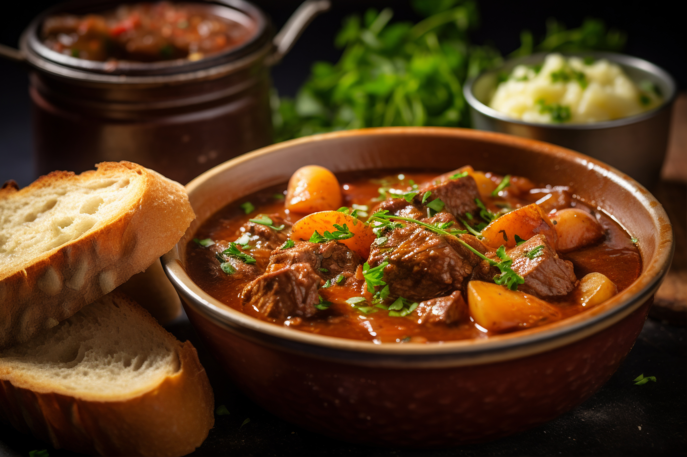

Boeuf Bourguignon

Description
Boeuf Bourguignon is a classic French stew originating from the Burgundy region, known for its deep, complex flavors developed through slow cooking. It features tender chunks of beef braised in red wine and beef broth, enriched with aromatics, onions, carrots, garlic, and a bouquet garni.
The dish is traditionally finished with sautéed mushrooms and pearl onions, served alongside crusty bread, mashed potatoes, or buttered noodles. Rich, elegant, and comforting, Boeuf Bourguignon is a culinary icon that transforms humble ingredients into something truly luxurious.
Ingredients
- 2.5 lbs (1.1 kg) beef chuck, cut into large cubes
- Salt and black pepper to taste
- 2 tablespoons olive oil
- 6 oz (170g) bacon, diced
- 1 large onion, chopped
- 2 carrots, sliced
- 3 cloves garlic, minced
- 2 tablespoons tomato paste
- 2 tablespoons flour
- 3 cups dry red wine (e.g., Pinot Noir)
- 2 cups beef broth
- 1 bay leaf
- 1 sprig fresh thyme (or 1/2 tsp dried)
- 1 lb (450g) small white onions or pearl onions
- 1 lb (450g) mushrooms, quartered
- 2 tablespoons butter
- Chopped parsley (for garnish)
Instructions
- Season the beef with salt and pepper. In a Dutch oven, heat olive oil and brown the beef in batches. Remove and set aside.
- In the same pot, cook the diced bacon until crisp. Add chopped onion and carrots; sauté until softened, about 5 minutes.
- Stir in the garlic and tomato paste; cook for 1 minute. Sprinkle with flour and stir to coat everything evenly.
- Pour in the red wine and beef broth, scraping the bottom of the pot. Return the beef to the pot along with bay leaf and thyme.
- Bring to a simmer, cover, and cook in the oven at 325°F (160°C) for about 2.5 to 3 hours, or until the beef is fork-tender.
- Meanwhile, in a skillet, sauté pearl onions and mushrooms in butter until browned and tender. Set aside.
- Once the stew is ready, add the onions and mushrooms. Simmer for 10 more minutes on the stovetop to combine flavors.
- Remove the bay leaf and thyme sprig. Adjust seasoning as needed.
- Serve hot, garnished with chopped parsley, over mashed potatoes, noodles, or with crusty bread.